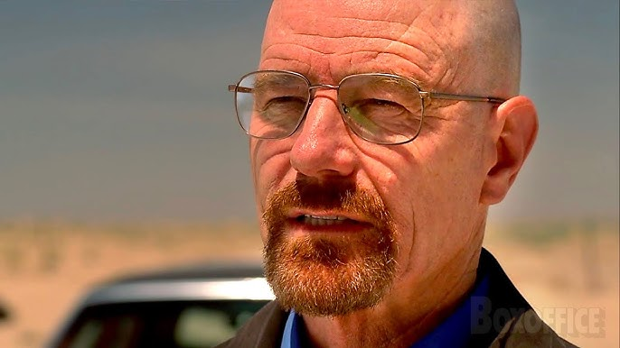

I am the danger
En esta secuencia nos encontramos con el verdadero Walter White, un hombre lejos de ser el padre, esposo y maestro que Skyler imaginaba conocer.

Say my name
Heisenberg un nombre que muchos odiaron, respetaron, temieron, buscaron y que resultó siendo la identidad 'secreta' de Walter. Un nombre inolvidable.

Ozymandias
Un capítulo lleno de grandes momentos que marcó la historia de la televisión, el único episodio existente de una serie con un 10 perfecto. Sólo es cuestión de verlo para saber que es icónico en sí.